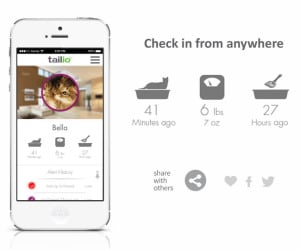
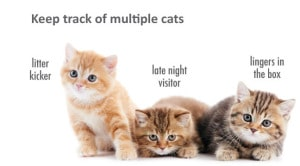

Qui a dit que les litières pour chat ne devait être que de vulgaires caissons remplis de sable et malodorants ? Sûrement pas les créateurs de Tailio qui ont changé la litière en un moniteur intelligent qui nous fournit des indications précieuses sur la santé de nos félins.
Grace a l'application liée, de nombreuses information vous sont partagées, comme savoir quotidiennement si son chat a fait ses besoins dans la litière, rappeler les médicaments qu’il doit prendre, rappeler qu’il est temps de nettoyer la litière. Tailio partage egalement les infos directment avec un vétérinaire
Si on est l’heureux propriétaire de plusieurs chats, il suffit de créer un profil pour chacun et Tailio en fonction des habitudes et détails physiologiques parviendra à distinguer chaque chat qui utilisera pourtant la même litière.
contacts :
pierric@radiomail-fr.com
06.51.55.69.74